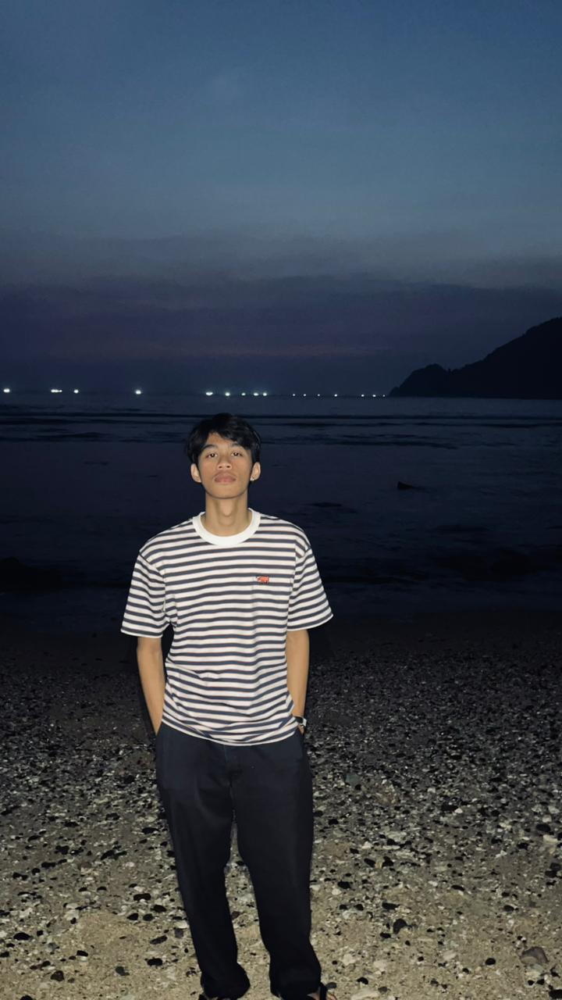

Muhammad Tegar Jatinegoro
Junior Network Administrator
Ringkasan Profil
Saya Mahasiswa Semester 3 Program Studi Teknik Komputer di Universitas Duta Bangsa. Selama perkuliahan, saya aktif dalam pembelajaran dan selalu bersemangat untuk mengembangkan keterampilan baru, khususnya di bidang infrastruktur IT.
Berbekal pemahaman dasar-dasar jaringan komputer, pemrograman, dan teknologi informasi, saya siap mengikuti program magang guna mempraktikkan ilmu secara langsung. Saya antusias untuk belajar, beradaptasi, dan berkontribusi secara profesional dalam lingkungan kerja yang nyata.
Karier
Pengalaman
Dinas Perhubungan (DISHUB) Surakarta
Operational & Maintenance
- Menyiapkan Surat Kerja (SK) operasional sistem.
- Membuat dan mengarsipkan Laporan teknis secara berkala.
- Terlibat di lapangan dalam memperbaiki Penerangan Jalan Umum (PJU).
Akademik
Pendidikan
Universitas Duta Bangsa Surakarta
2025 - SekarangD3 Teknik Komputer
Menempuh Semester 3 dengan fokus akademis pada rekayasa sistem komputer, administrasi jaringan dasar, serta manajemen infrastruktur IT.
SMK N 2 Surakarta
2022 - 2025Jurusan Teknik Elektro
Kompetensi
Keahlian & Aktivitas
Soft & Hard Skills
Sertifikasi & Organisasi
-
Aktif Berorganisasi Kampus
Berpartisipasi aktif dalam struktur organisasi kampus Universitas Duta Bangsa guna melatih kepemimpinan serta kolaborasi eksternal.
-
Seminar Improvement Softskill
Mengikuti webinar intensif bertajuk pengembangan kepribadian dan asertivitas komunikasi untuk bekal profesional.